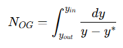
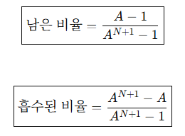
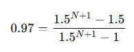
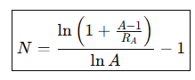
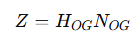

Absorption and Stripping of Dilute Mixtures - intro
이 장은 기체 또는 액체 혼합물에서 원하는 성분을 얼마나 제거하려면 흡수제, 탈거제의 유량과 단수, 탑높이, 탑 직경, 압력강하를 어떻게 정해야 하는지 알아보는 챕터이다. 자세한 학습에 앞서 이 장에서 다루는 지식을 나열하려고 한다. 이유를 뒤 포스팅에서 세세히 다룰 것이다.
1.흡수와 스트리핑
먼저 기본용어를 잡자. Absorption은 기체 속 용질을 액체 흡수제로 이동시키는 것이고 Stripping은 반대로 액체 속 용질을 기체로 제거하는 것이다. A=L/KV와 S=KV/L=1/A 라는 각각의 인자가 존재한다.
흡수탑: 고압, 저온이 유리
탈거탑: 저압, 고온이 유리
이유는 K 값 때문이다. 흡수는 K가 작을수록 유리하고, 탈거는 K가 클수록 유리하다.
2.장치
이 장에서는 장치를 두 개로 나눠서 본다. Tray column과 Packed column이다.
Tray column = 단수 개념으로 계산하기 좋음 vs Packed column = 연속 접촉이라 HTU/NTU로 계산
이때 HTU/NTU는 packed column에서 탑높이를 계산할 때 쓰는 개념이다. Tray column은 몇 단이 필요한지 계산할 수 있으나 packed column은 안에 충전물이 쭉 들어 있어서 단이 딱딱 나뉘어 있는게 아니다. 따라서 몇 단 대신에, 높이를 계산하며 다음과 같이 계산한다.
충전층 높이 = 한 단위 전달에 필요한 높이 × 그런 전달 단위가 몇 개 필요한지
Z=HTU×NTU
즉 여기에 해당하는 개념이 HTU/NTU이다. NTU = Number of Transfer Units으로 원하는 만큼 흡수/탈거하려면 물질전달을 몇 번 정도 반복해야 하는가?를 의미하는데, 간단히 NTU= 분리 난이도라고 보면 된다.

y−y∗는 mass transfer driving force, 즉 실제 기체 농도와 평형 기체 농도의 차이를 뜻한다.
HTU = Height of Transfer Unit으로 물질전달 1단위를 해내는 데 충전층 높이가 몇 m 필요한가를 나타낸다. HTU가 작을수록 좋은 packed column이라고 볼 수 있다. 이게 0.5m면 물질전달 잘돼서 높을 필요가 없다는 것이고, 15m면 물질전달이 너무 안된다는 뜻이다.
| (V) | 기체 유량 |
| (K_ya) | 전체 기체 기준 부피당 물질전달계수 |
| (S) | 탑 단면적 |
Kya가 크다 → 물질전달 잘 됨 → HTU 작아짐
충전물이 좋다 → 접촉면적 큼 → HTU 작아짐
유량이 너무 크다 → 접촉 시간 부족 → HTU 커질 수 있음
따라서 최종 공식은 다음과 같다.
필요 높이=장치 성능 단위 높이×분리 난이도
3. 조작선과 평형선
흡수냐 탈거냐에 따라서 탑 번호가 바뀌게되고, 이로 인해 물질수지식에 차이가 생긴다. 흡수탑 조작선을 외운뒤 인접한 X,Y끼리 첨자를 바꾼다고 생각하면 외우기 쉽다.
일단 조작선의 경우, 식을 외우고 이를 토대로 그림을 그리게 된다. 이때 그림에서 흡수: 조작선이 평형선 위, 탈거: 조작선이 평형선 아래이며 평형선과 조작선 선이 가까워지면 driving force 감소하고, 핀치가 생기면 필요한 단수가 무한대가 된다.
4. 최소 흡수제 유량
흡수탑에서는 최소 액체 유량 Lmin'이 있다. 이때 희박 용액이고 유입 흡수제가 순수하다고 가정하면 다음 식이 성립한다.
더 많이 흡수하려면 액체 유량이 늘어야 하고, K가 큰 성분은 액체로 잘 안 가니까 더 많은 흡수제가 필요하다는 뜻이다. 여기서 K는 용질이 기체로 가려고 하는 성질인 평형상수인데, K가 크다는 거는 흡수가 잘 안된다는 뜻이다. 흡수탑에서는 기체 속 용질을 액체가 받아먹는 것이다.
| V′ | 처리해야 하는 기체 양 |
| K | 용질이 기체에 남으려는 정도 |
| fraction absorbed | 제거하려는 비율 |
이는 기체가 많으면 그만큼 처리제인 액체도 많이 필요하고, K가 크면 기체에 남으려고 하기 때문에 액체가 많이 있어야되고, 많이 제거하려할 수록 액체가 많이 필요함을 뜻한다.
5. 이론단수 계산
두 가지 방법이 있다: 그래프법과 Kremser 식
Kremser식은 이 장에서 매우 중요하다.

크렘저식의 경우 남은 비율을 나타내는 식과, 이를 1에서 빼서 흡수된 비율을 나타내는 식 2개가 존재한다. 이때 N이 단수이다. 따라서 만약 A=1.5이고 흡수율이 97%를 달성하고 싶다면 다음과 같이 식을 작성 후 풀게된다.

따라서 단수를 다음처럼 구할 수 있다.

6.Tray efficiency
이론단 수와 실제 단수는 다르다. 보통 실제 단수가 더 많은데, 이를 다음처럼 나타낸다.
예를 들어 이론단수 6단이 필요하고 효율이 30%라면 실제 tray는 20개 필요하다.
7. Flooding, weeping, entrainment
| Flooding | 기체 속도가 너무 커서 액체가 위로 밀림 |
| Weeping | 기체 속도가 너무 작아서 액체가 tray 구멍으로 샘 |
| Entrainment | 액적이 기체에 실려 위로 넘어감 |
| Downcomer flooding | downcomer가 액체를 못 내려보냄 |
간단한 개념인데, 한번 보기만 하자.
8. Packed column: HTU/NTU
Packed column은 tray처럼 몇 단이라고 보기 어렵기에, 단수를 구해서 한단의 높이와 곱하는 방법으로 총 높이를 구하기 힘들다. 이때 최종 높이를 계산하기 위해 다음 식을 쓴다.

| Z 또는 l_T | packed height |
| H_{OG} | height of overall gas transfer unit |
| N_{OG} | number of overall gas transfer units |